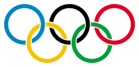

Letnje olimpijske igre međunarodni su multisportski događaj koji se održava svake četiri godine u drugom gradu. Prve igre su održane 1896. godine u Atini (Grčka), a poslednje godine 2016. u Rio de Žaneiru (Brazil). Međunarodni olimpijski komitet organizuje igre i nadgleda pripreme u gradu domaćinu. Za svaki olimpijski događaj se dodeljuju zlatne medalje za prvo mesto, srebrne medalje za drugo mesto i bronzane medalje za treće mesto; ova tradicija je započeta 1904. godine. Zimske olimpijske igre su kreirane na bazi uspeha Letnjih olimpijskih igara. Na Letnjim olimpijskim igrama se u početku (1896) takmičilo u samo 42 discipline i učestvovalo je manje od 250 muških takmičara iz 14 zemalja, a do 2012. se ova statistika povećala na 302 discipline sa 10.768 takmičara (5.992 muškarca i 4.776 žena) iz 204 zemlje.
Osamnaest zemalja je dosad ugostilo takmičare Letnjih olimpijskih igara. Sjedinjene Američke Države su ugostile takmičare četiri puta (1904, 1932, 1984. i 1996), više nego ijedna druga zemlja; Velika Britanija je bila domaćin za troje Letnje olimpijske igre (1908, 1948. i 2012), sve tri puta u Londonu. Tri grada su bila domaćin po dva puta: Los Anđeles (1932. i 1984), Pariz (1900. i 1924) i Atina (1896. i 2004). Jedine Letnje olimpijske igre do sada održane na Južnoj hemisferi su bile u Australiji (Melburn 1956. i Sidnej 2000) i Brazilu (Rio de Žaneiro 2016). Igre u Riju su bile prve Letnje olimpijske igre u Južnoj Americi i prve Letnje olimpijske igre održane tokom lokalne zimske sezone. Pet država — Grčka, Australija, Francuska, Velika Britanija i Švajcarska — učestvovalo je na svim Letnjim olimpijskim igrama. Jedina zemlja koja je osvojila po najmanje jednu zlatnu medalju na svakim Letnjim olimpijskim igrama je Velika Britanija. Sjedinjene Američke Države su vodeće na sveukupnoj tabeli.